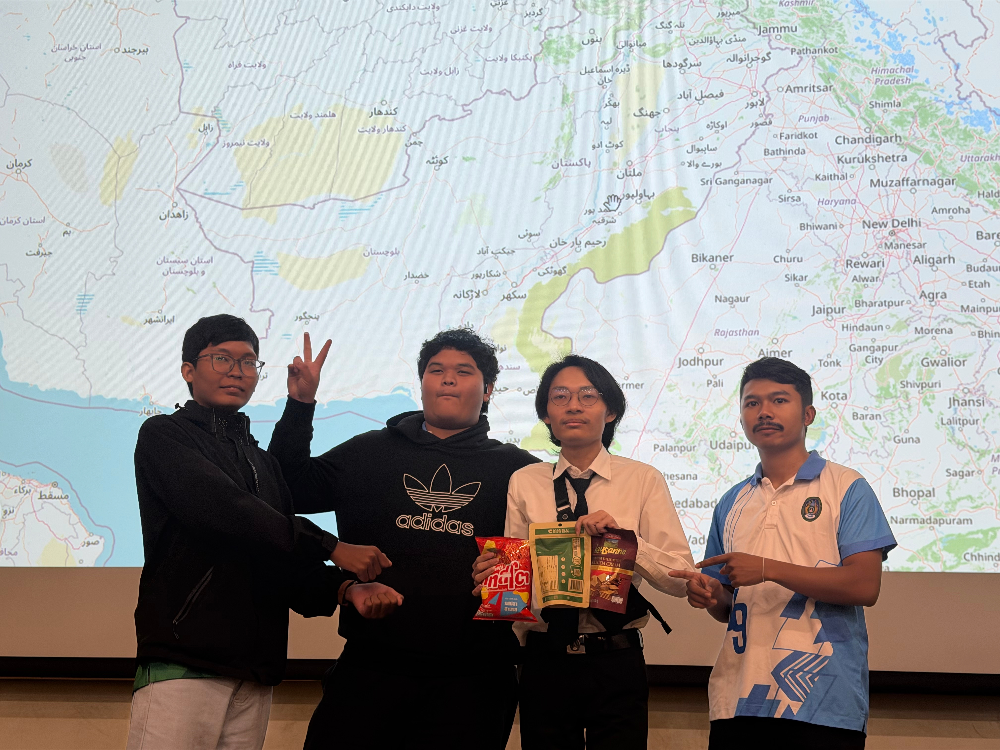
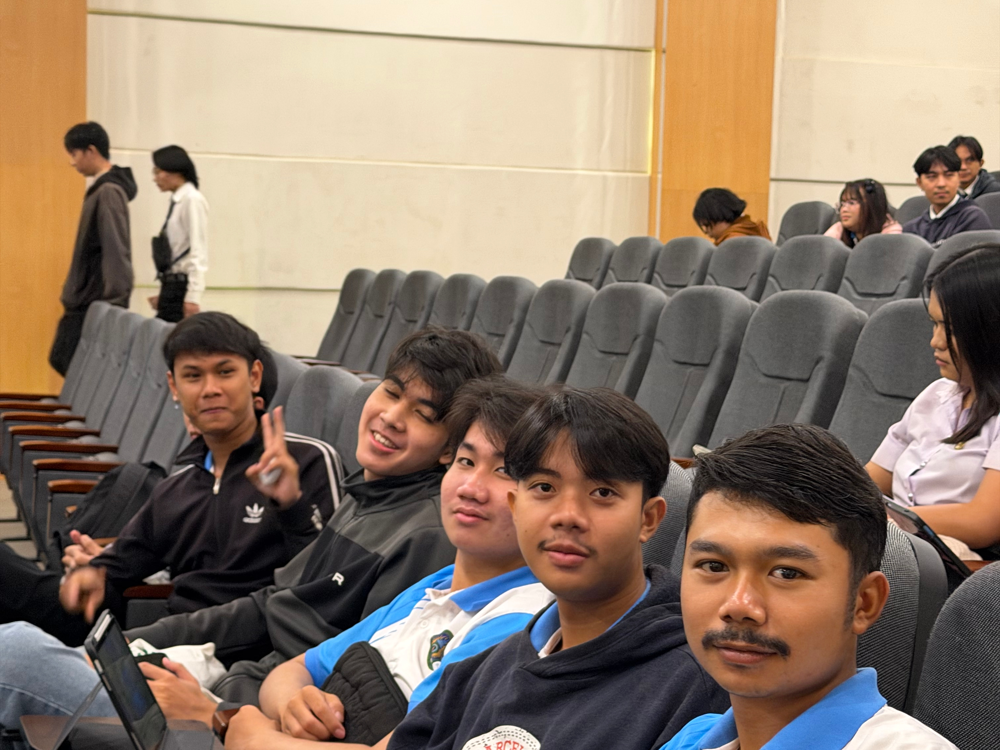
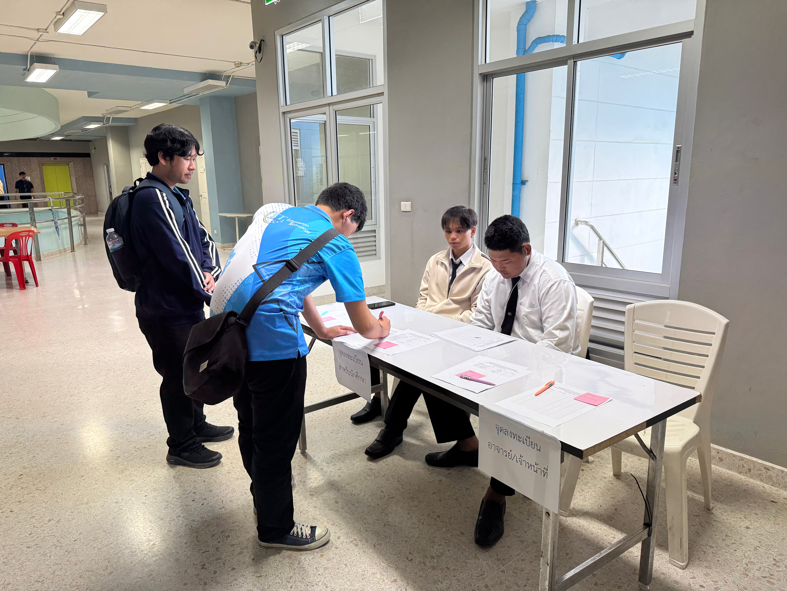
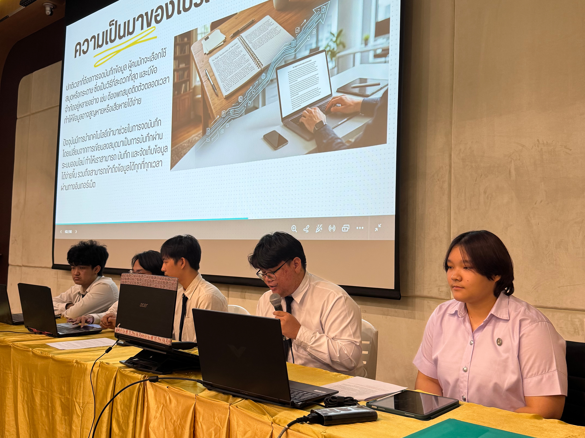
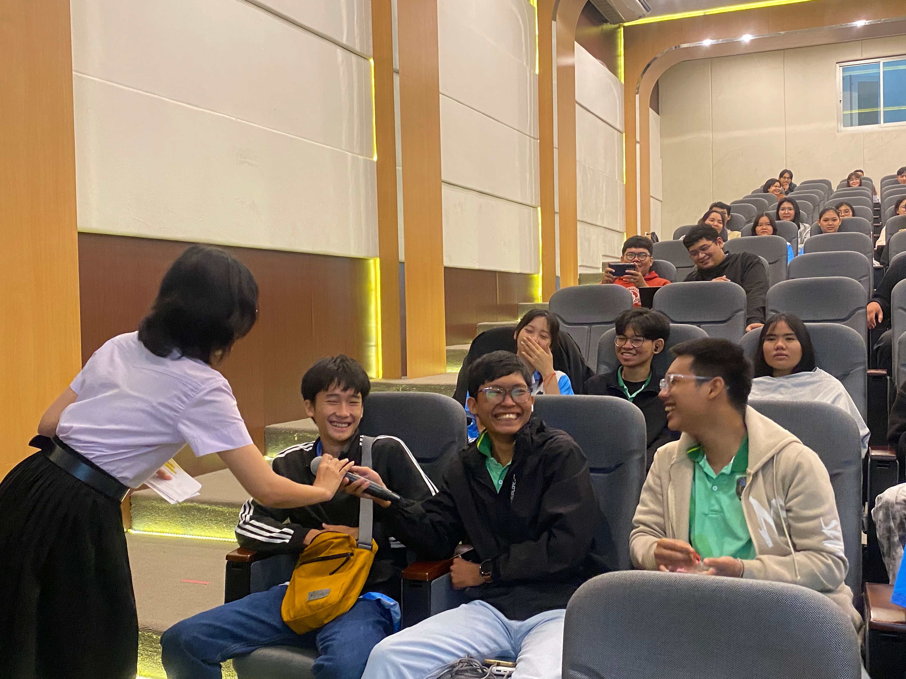
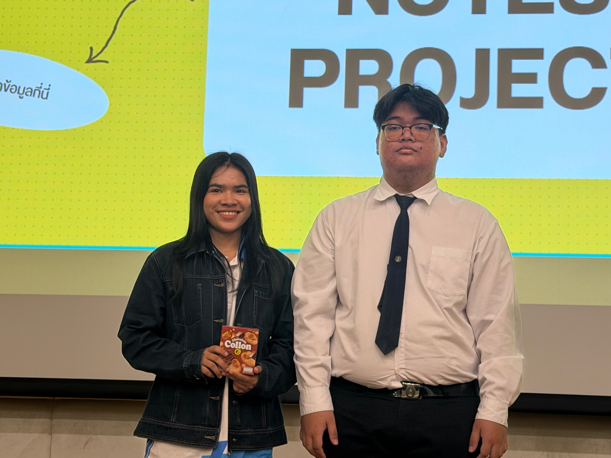
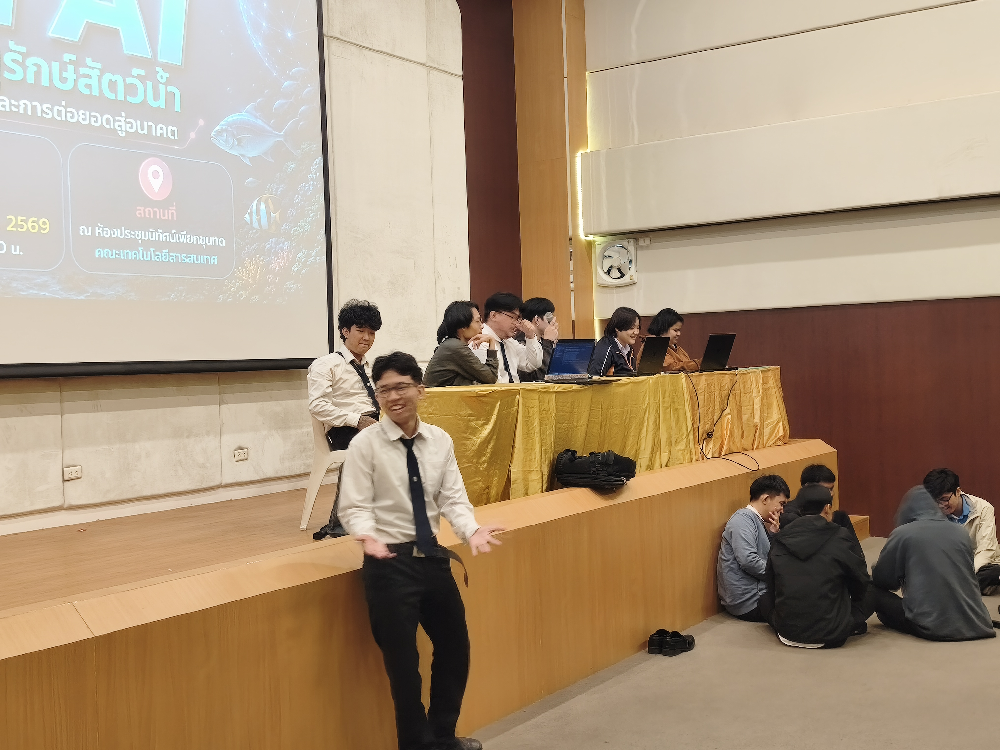
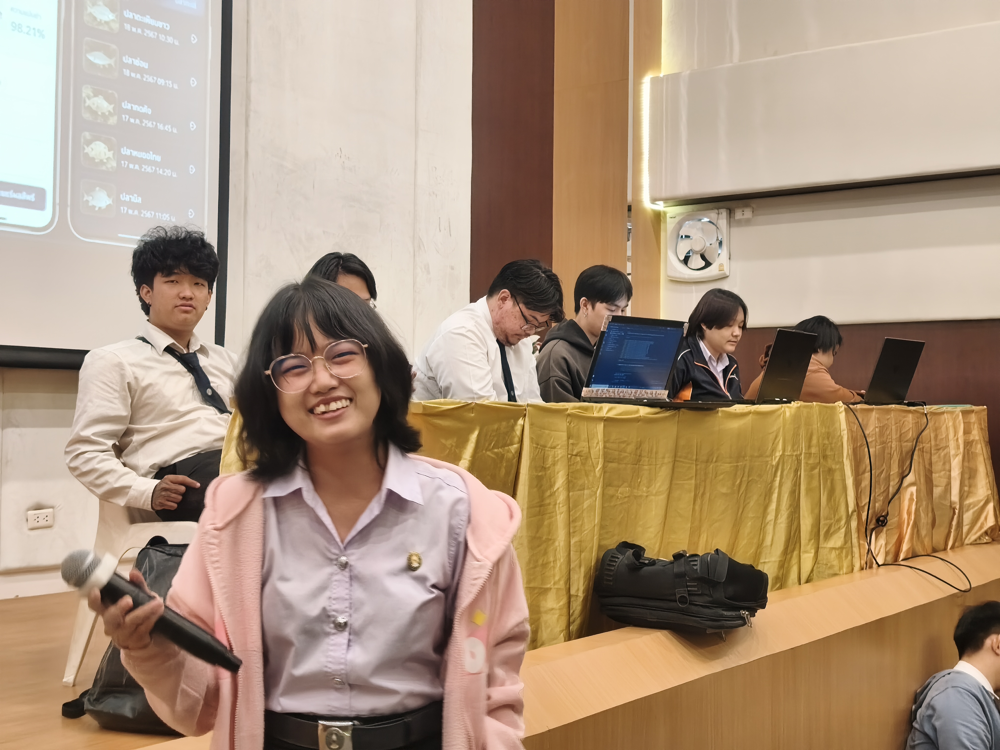

01HOSTING THE ROOM
ดำเนินรายการ เชิญอาจารย์เปิดงาน และเชื่อมต่อผู้เข้าร่วมกับวิทยากร
SPECIAL SEMINAR E‑REPORT
นวัตกรรมเพื่อการอนุรักษ์สัตว์น้ำ การจัดการ Ecosystem และการต่อยอดสู่อนาคต
รายงานประสบการณ์การจัดสัมมนาวิทยาการคอมพิวเตอร์ ในบทบาทหัวหน้ากลุ่มและพิธีกร

MC / LIVE
DOCUMENTED HIGHLIGHTS

01ดำเนินรายการ เชิญอาจารย์เปิดงาน และเชื่อมต่อผู้เข้าร่วมกับวิทยากร

02ดูแลจังหวะการนำเสนอผลงานทั้งช่วงที่ 1 และช่วงที่ 2

03ประสานงานทีมออแกไนซ์ เตรียมพื้นที่ เอกสาร และอุปกรณ์ให้พร้อม

04เปิดโอกาสให้น้อง ๆ ถาม–ตอบ ดำเนินเกม และแจกรางวัล
PUBLIC ANNOUNCEMENT / FACULTY NEWS
📢 คณะเทคโนโลยีสารสนเทศ จัดกิจกรรมสัมมนาวิชาการและนำเสนอผลงานโครงงานด้านเทคโนโลยี (Project Showcase) โดยนักศึกษาวิทยาการคอมพิวเตอร์
นักศึกษาชั้นปีที่ 4 สาขาวิชาวิทยาการคอมพิวเตอร์ คณะเทคโนโลยีสารสนเทศ จัดกิจกรรมสัมมนาวิชาการและนำเสนอผลงานโครงงานด้านเทคโนโลยี โดยเปิดโอกาสให้นักศึกษาและบุคคลทั่วไปที่สนใจเข้าร่วมกิจกรรม
การสัมมนาจัดขึ้นในหัวข้อ “Thailand Fish AI นวัตกรรมเพื่อการอนุรักษ์สัตว์น้ำ การจัดการ Ecosystem และการต่อยอดสู่อนาคต” เพื่อถ่ายทอดความรู้ แลกเปลี่ยนมุมมองด้านเทคโนโลยี และเปิดพื้นที่ให้นักศึกษาชั้นปีที่ 4 นำเสนอผลงานจากการเรียนรู้และการประยุกต์ใช้เทคโนโลยี
PROJECT SHOWCASE / 05 PROJECTS
THE JOURNEY OF CHUBCHIP
STAGE 01 / 29 SEPTEMBER
วันซ้อมในบทบาทออแกไนซ์ เน้นการรันงานและตรวจสอบความพร้อมก่อนถึงวันจริง
“วันซ้อมทำให้เห็นภาพรวมของงาน ตั้งแต่จุดลงทะเบียนไปจนถึงจังหวะบนเวที การได้ลองรันงานจริงช่วยให้ทีมรู้ว่าต้องปรับอะไรบ้างก่อนวันสัมมนา”
— ChubChip / Group Lead

STAGE 02 / EVENT DAY
เริ่มลงทะเบียน เตรียมโต๊ะและใบลงทะเบียน อำนวยความสะดวกแก่ผู้เข้าร่วมงาน
ORGANIZEเริ่มกิจกรรมสัมมนา กล่าวต้อนรับและแนะนำหัวข้อ Thailand Fish AI
MC / HOSTกิจกรรม “ภาพนี้คืออะไร” พร้อมการแจกรางวัล
ACTIVITYเริ่มช่วงนำเสนอผลงานและแนะนำวิทยากร 5 คน
SHOWCASEพักเบรกและเตรียมความพร้อมสำหรับช่วงที่สอง
RESETกลับเข้าสู่ช่วงนำเสนอผลงานต่อเนื่อง พร้อมดูแลจังหวะของงาน
SHOWCASEถาม–ตอบเก็บตก เปิดโอกาสให้น้อง ๆ มีส่วนร่วม และแจกรางวัล
CLOSINGกล่าวปิดกิจกรรมและสิ้นสุดงานสัมมนา
DONEDOCUMENTED MOMENTS
TEAM FILES / GROUP 05
ช่วยด้วยแย่แล้ว
ปลาหมอสีเหลือง
FINAL REPORT / PERSONAL LOG
การเป็นหัวหน้ากลุ่มทำให้ต้องมองเห็นภาพรวมของงานทั้งหมด ตั้งแต่การเตรียมอุปกรณ์ โต๊ะลงทะเบียน เอกสาร ไปจนถึงการประสานงานกับสมาชิกในทีม เพื่อให้ทุกส่วนพร้อมก่อนเริ่มกิจกรรมจริง
บทบาทนี้ทำให้ได้ฝึกการวางแผน การแก้ไขปัญหาเฉพาะหน้า และการรับผิดชอบงานร่วมกับผู้อื่น
การเป็นพิธีกรทำให้ได้ฝึกการสื่อสารและการควบคุมจังหวะของกิจกรรม ตั้งแต่เชิญอาจารย์เปิดงาน แนะนำวิทยากร คั่นรายการ เปิดช่วงถาม–ตอบ ไปจนถึงการเดินไมโครโฟนในช่วงเกม
ได้เรียนรู้การแก้ไขสถานการณ์เฉพาะหน้าและสร้างบรรยากาศให้ผู้เข้าร่วมมีส่วนร่วม